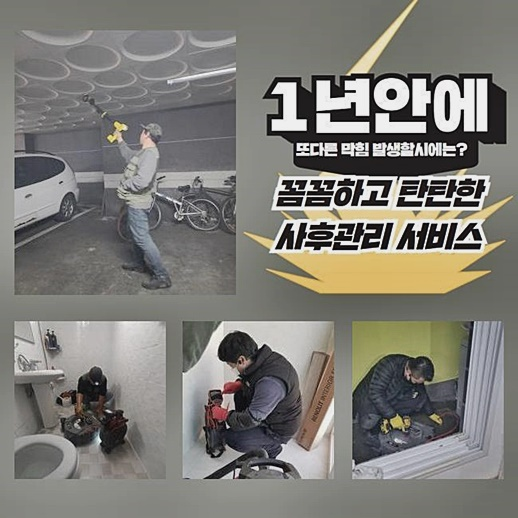
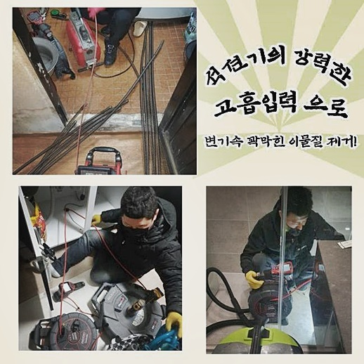
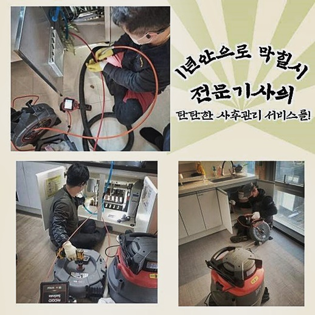
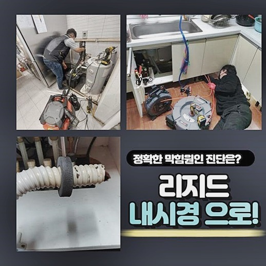
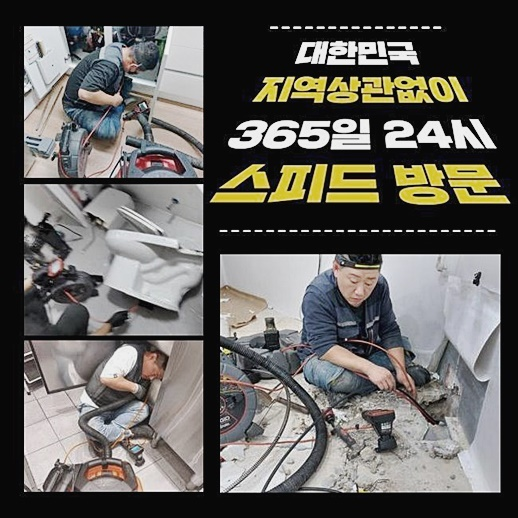
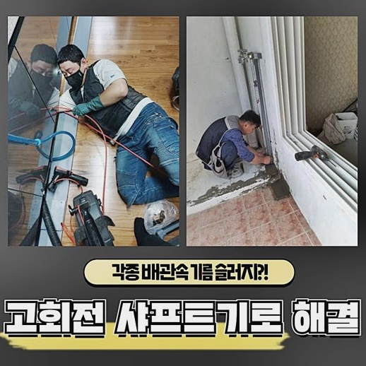
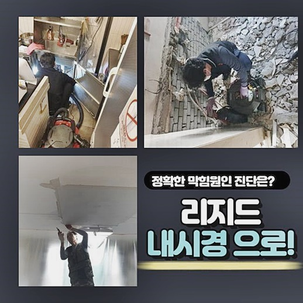

🏠 종로 필운동싱크대배수구막힘 팔판동 배관내시경카메라 누수공사
용인 싱크대막힘 전문 시공 후기

📋 작업 개요
- 위치: 용인
- 서비스 유형: 싱크대막힘, 하수구막힘, 배관막힘, 누수수리, 역류해결, 뚫는업체, 배관청소, 고압세척, 설비공사, 악취차단
- 작업 일시: 2024. 6. 12. 9:47
- 업체명: 하수구수사대 (010-5615-2118)
🔍 문제 상황
하수관이 차단된다면 여러분들은 무슨 수단을 채택하여 극복하려 하십니까?
물이 내려가지 않는걸 무시하고 있다면 연쇄적인 문제로 계속 연속되어서 고충을 겪으실지도 모릅니다
해결한 현장의 통계를 내보면 처리를 미루게 된다면 누수사태나 악취 등이 생겨 정도가 심한 지출로 이어질 수 있습니다
배관이 고장난걸 감지한다면 적극적으로 수습하는 방향성이 바람직한 수단이라고 권장드리고 있습니다
물이 내려가는 배수구들에 폐쇄현상이 일어나면 당장 불편함을 없애려고 다양한 매체에서 습득한 노하우를 참고하여 뚫는 작업을 시험하고 계실겁니다
여러번 시도했음에도 재차 막혀버려서 어느정도 며칠 지나지 않아서 또 힘든 뚫음 방법을 시도 하는 분이 많으실 겁니다
종로 필운동싱크대배수구막힘 팔판동 배관내시경카메라 누수공사
배수 설비를 비전문가가 뚫는 것 자체가 절대 쉽지않은 일입니다
겉에서도 보이는 이물질로 발생한 오류라면 일부만 관통하면 나아지겠지만 어두운 심층부에서 장애 요소가 끼인다면 아무리 세제를 넣어도 뜨거운 물을 수차례 부어도 헛수고만 하게될 상황이 비일비재하게 생깁니다
막혔다면 가루나 기기를 저렴하다는 이유로 계속 사시기보다 대신 배관 전문공의 조치를 요청하는 방향이 이상적일 것이라고 권유드리고 싶습니다

🔎 원인 분석
💡 전문가 진단: 정밀 진단 장비를 사용하여 슬러지의 고착 여부를 판명하고 타격/세척 작업을 실시했습니다.
이물질의 형태와 위치에 대해 체계적으로 조사하고 접근하는 것과는 혼자 처리한 것과는 차이가 차원이 다른 문제입니다
일정량의 세정제를 넣어 주방에서 생겨난 막힘을 뚫어주려는 노력을 직접 실행했다고 하셨어요
막힌 물이 내려갈 때 까지 계속 연달아서 끈기있게 뚫으시다가 제풀에 지쳐 포기하셨고 저희 업체를 물색하여 연락을 주셔서 방문하게 되었죠
의뢰인분과 이야기를 나누고 근원적인 문제점을 식별하려는 목적으로 깊숙한 배수 경로로 검사용 장비를 내려보냈습니다
촬영 렌즈와 조명을 이용하여 보기힘든 내부를 선명하게 분간할 수 있었어요
내부를 들여다 봤더니 오염 입자가 흘러들어가 갯벌 진흙이 굳은것마냥 물길이 점점 좁아지는 상황까지 치달은 거였어요
참관하시던 의뢰인분도 가득찬 모습에 충격을 받으셨는데 빠르게 움직였다면 수습이 까다로울 수준으로 확장되지 않았을 것입니다
이물질들로 배관이 갑갑하게 물이 배출될 시에는 뭔가 결함이 생긴것이니 입구에서 시작해서 장비를 넣어 오물을 긁고 닦아내야 합니다
배관 안쪽으로 통수를 돕고 스켈링 기능까지 보유한 헤드 끝의 노커가 달린 샤프트 장비를 삽입하여 작업을 바로 시작합니다
강인한 기계인데 노커가 원을 그리며 순환하며 잔해를 소분하게 되는데 이 작업을 시행할때는 열중하여 임해야 합니다
샤프트와 병행하여 내시경 촬영기도 넣어서 정리가 잘 되고 있는지도 감독을 하다보니 벽면을 손상시키지 않아요

🔧 작업 과정
분쇄 작업을 하는 도중에 화면으로 보이는 알아차리게 됐는데요
여기는 주방 배관과 접한 지점에 다른 수로가 형성된 것을 알게됐는데 보일러 쪽 배관과 모체 줄기가 같더라고요
이 부분에 설치되었던 하수관들에서 몇 번 물이 투출되었던 것인지 근방에 오물들이 바닥을 감싸고 있었습니다
이것 때문에 안그래도 악취가 진하게 올라왔다고 말씀해주셨어요
역류된 오염원으로 인해 가까이에 있어서 그런 것이고 더이상의 역류는 안생기게 그에 맞는 작업으로 결계를 마련해야 해서 카메라로 안을 꼼꼼히 살핍니다
목표 지점은 뚜렷해 보였고 사이드에 고정된 잔량만 흡입하면 될 듯하여 샤프트를 재가동해서 해당 지점에 위치시켜서 적절한 세기로 긁어내면 물길이 다시 트일거라고 짐작이 되더라고요
기기를 한참 가동하고 갈라진 부산물들을 석션으로 흡수 작업을 하고보니 많은 양이 기기 내부로 유입됐다는 사실을 직접 보고 저도 놀랐네요
작업을 완수하면 늘 확인하는데 다 들어가 있었던게 신기했던 주택도 마주한 적이 있답니다
내측을 관찰하는 카메라가 없으면 본질적 원인을 찾지 못해 맞춤형 청소 방식을 시행할 수 없습니다
고성능의 내시경 장비가 든든하게 보조할테니 전체적인 배수로의 상태를 완벽하게 조성해 드려요
청결 관리를 끝마치고 구불구불 이어진 경계선 위치까지 스캔을 하면서 통로가 시원하게 형성됐나 봤습니다
한치 앞도 보이지 않던 배관이라고는 믿기지 않을만큼 처음부터 끝까지 맑게 변한 배관을 직접 관찰하시면서 막힘으로 생긴 스트레스도 제거된 듯 하다고 하셨어요
뒷정리를 하고 있는데 다른 현장에서 호출이 와서 주소지로 향했는데 각 건물의 배관들마다 성격과 맥락은 상이합니다
현장의 특성을 봤더니 조리 도중의 잔여물로 인해 수로가 정지된듯 하다고 상정하고 나서 검수에 돌입해 보니 저희의 예상이 정확했습니다
의뢰인께 설명을 드리고 소형 고압세척기를 동원하여 단시간에 침전물을 떨어뜨리는 작업을 시행하고서 마무리를 했습니다
고압 분사기로 행했던 작업이 매듭지어지면 물도 순항하며 운반되고 배관 안팎이 전반적으로 맑고 투명해진 점을 선물처럼 얻게 되실겁니다!


✅ 작업 완료
담당하는 현장이 어디라도 꼼꼼하게 근원을 파악하여 효과가 좋을 장치를 투여하여 완전소거를 목적으로 청소하면 180도 변한 하수구를 만나보실 수 있을겁니다!
단순한 막힘뿐만 아니라 악취까지 동반하더라도 배관 스케일링 작업으로 스케일 작업을 한다면 냄새도 싹 잡히니 크게 걱정하지 마세요!
스케줄에 맞는 도착을 서비스하고 있으며 양심껏 비용을 매기고 있으니 가격 부담에 대해서도 우려하실 필요는 없습니다
아직 의문점이 있으시다면 언제든지 연락해주셔서 문의하신다면 눈높이에 맞춰서 설명드릴게요!
배관 장애부터 시작하여 실내 설비에 대한 모든 오류들을 절대적으로 책임져 드릴게요




⚠️ 베란다 누수 및 방수 관리 방법
- ✅ 비가 많이 올 때 창틀 주변이나 아래층 천장에 얼룩이 생기는지 정기적으로 확인해 보세요.
- ✅ 우수관 주변 실리콘 마감이 들뜨거나 깨진 틈새가 있는지 손상 여부를 수시로 체크하세요.
- ✅ 베란다 바닥 타일의 줄눈(메지)이 소실되면 그 틈으로 물이 침투하여 누수가 유발됩니다.
- ✅ 누수 의심 증상 발견 시 방치하면 아래층 손실이 커지므로 즉시 전문가의 진단을 받으십시오.
💡 핵심 정리
- 확실한 장비 작업(내시경 점검 및 샤프트 스케일링)으로 원인을 뿌리 뽑습니다.
- 작업 후 1년 이내에 동일한 부위 재발 시 100% 무상 A/S 서비스를 보장합니다.
- 서울 · 경기 · 인천 전 지역에 24시간 언제든 긴급 출동할 수 있도록 항시 대기 중입니다.
❓ 자주 묻는 질문 (FAQ)
🚨 용인 싱크대막힘 문제로 고민이신가요?
정확한 원인 진단과 확실한 시공으로 재발 없는 해결을 약속드립니다.
24시간 긴급 출동 | 서울 · 경기 · 인천 전지역 | 1년 내 재발 시 무상 A/S